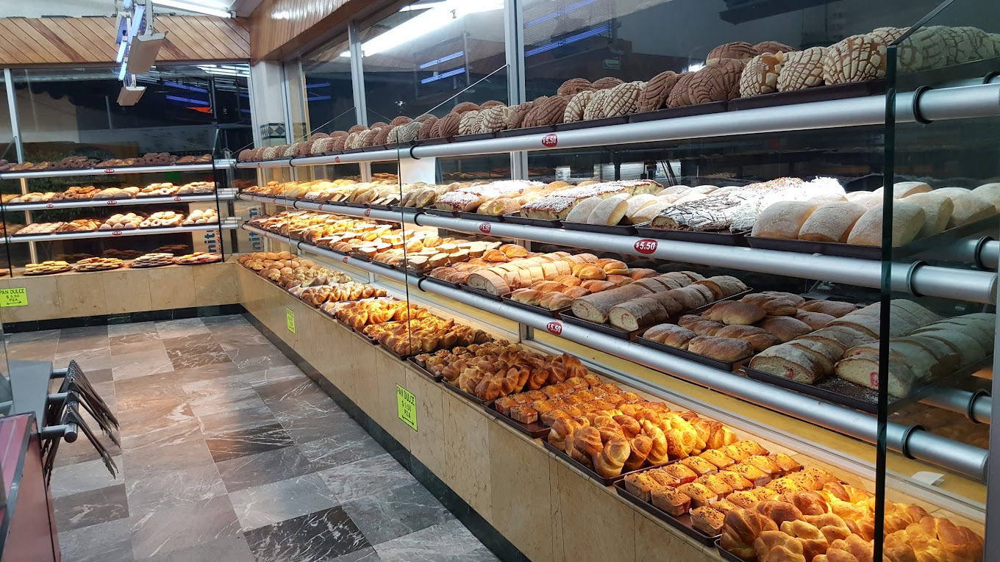

LA PANERA

Misión
Elaborar productos de panadería y repostería de la más alta calidad, utilizando ingredientes naturales y técnicas tradicionales.
Satisfacer los paladares más exigentes con productos frescos y artesanales, manteniendo el sabor de la auténtica panadería mexicana.
Nuestra misión es endulzar la vida de nuestros clientes cada día, desde temprano en la mañana.